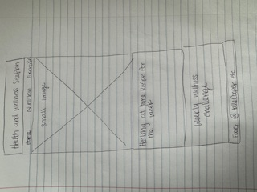
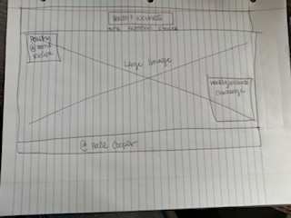

Site Name
Site Name: My Wellness Journey
Reason: The name "My Wellness Journey" was selected to represent a personal and inclusive approach to health and wellness, encouraging users to explore their own path to better health.
Optional Domain: mywellnessjourney.org
Site Purpose
The website aims to provide visitors with reliable health and wellness information, focusing on two main areas: Nutrition and Exercise. The site will also offer tools to help users create personalized wellness plans.
Scenarios
- Scenario 1: What are some healthy recipes I can try at home?
- Scenario 2: What kind of exercise routine is best for beginners?
Color Schema
- Navy Blue (#001f3f): Used for the background, headings, and navigation bar.
- Red (#FF4136): Used for accents, links, and buttons.
Typography
Primary Font: Arial, sans-serif
Use: Used for body text and content.
Secondary Font: Georgia, serif
Use: Used for headings to create a contrast with the body text.
Wireframe
Here is a basic wireframe sketch for the homepage layout, both for mobile and desktop views:
 